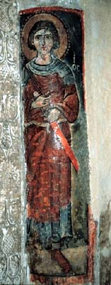

Click here first to download Coptic Fonts
Home
Learning
Library
Church Books
Pronunciation
About Copts
Dictionnaries and Lexicons
Dictionnaires et Lexiques de l’Egyptien, Bibliographie critique –
by Dimitri Meeks
Crum Dictionary
Claudius Labib Dictionary -
1
,
2
,
3
,
4
,
5
Coptic-English Lexicon
English-Coptic Lexicon
English/Coptic MiniLexicon
Useful Expressions for daily use
by Joseph Sedrak
Historic Coptic Language References
Grammaticae Aegypticae,
by Christiani Schultz 1778
Rudimenta Lingua Coptae Sive Aegyptiacae
1778
A Compendious Grammar of the Egyptian Language,
by Rev.Henry Tattam –
Edition 1830
–
Edition 1863
Grammatica Linguae Copticae, by Amadei Pyron 1841
Dictionnaire Egyptien -
by J.F. Champollion Le Jeune 1841-43
Koptische Grammatik,
by Dr Möritz Gotthilf Schwartze 1850
Linguae Copticae Grammatica
1853
Des formes de la conjugaison en Egyptien Antique, en Demotique et en Copte –
by G. Maspero 1871
An Egyptian Hieroglyphic Dictionary -
by Sir E.A. Wallis Budge 1920
Vol. I
–
Vol. II
Illustrated Introduction to Akhomfat Coptic Educational Books, b
y Claudius Bek Labib 1923
Medieval Muqadimat and Salalem
Muqadimat Al-Sammanoudi
Muqaddimat Al-Tabsera
Muqadimat Ibn El Assal
Muqaddimat Al-Qaliuby (El-Kefaya)
Tafsir el-kalam el-ebrani (St Epiphanios of Cyprus)
Manuscript
,
Typed
Various Coptic Syllabi
The 14 Step Course
Bohairic Old Pronounciation Courses
by Dr Emil Maher
Introduction to Bohairic
Introduction to Sahidic
Course Levels
1
,
2
,
3
,
4
,
5
Focus exercise
Learn Coptic
by Dr Wafik
Adly
Coptic 20 Lessons
Extra-Curricular Items
Old Coptic Alphabet
Conjunctions in Sahidic
Verb Conjugation Manual
Milton Coptic Verb Conjugation
Pronoun & Article Manual
Outline of Bohairic Coptic Morphology
A Short English-Coptic classified vocabulary
Outline of Sahidic Coptic Morphology

|
Download fonts
|
FAQ
|
Acknowledgment
|
Email us
|
|
Patron Saint of the Web Site
|
Created on Thursday 27 July 2000, Last updated Wednesday 27 January 2010